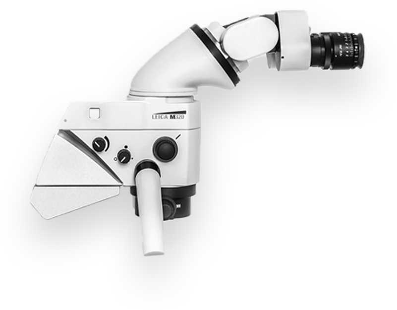

Лечение под микроскопом
Врачи нашего медицинского центра для лечения корневых каналов используют коффердам и современные материалы, ультразвуковое оборудование и микроскоп. Доступны методы холодной и горячей гуттаперчи, временного пломбирования кальцийсодержащими.
препаратами для стабилизации и устранения изменений тканей периодонта. Все этапы лечения совершаются с анестетиками, поэтому процедура абсолютно безболезненна. После пломбировки проводится контроль качества и реставрация зуба.
